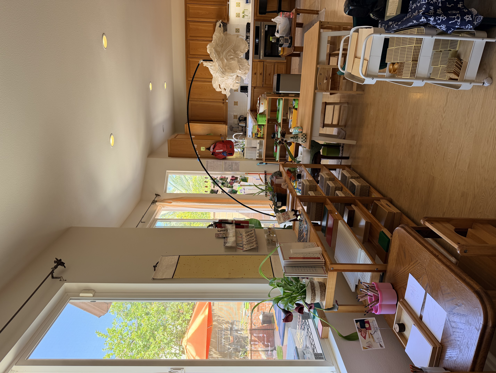
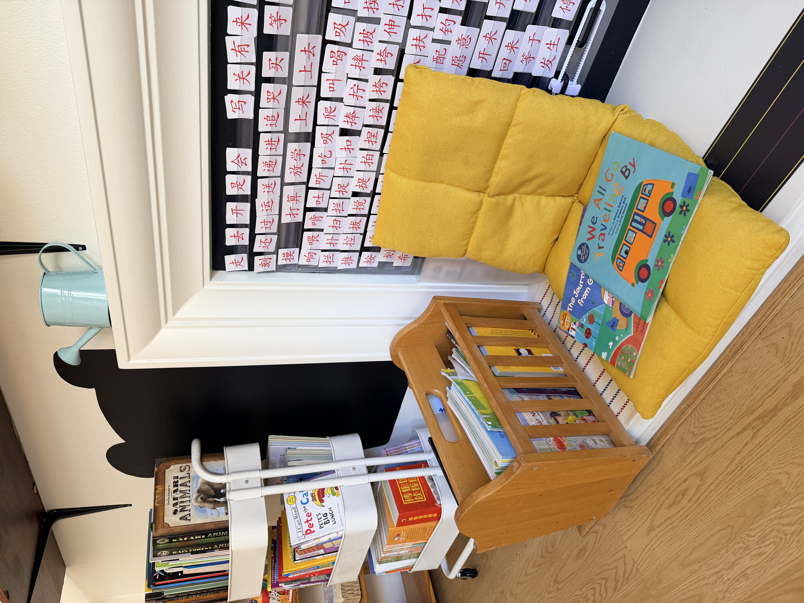
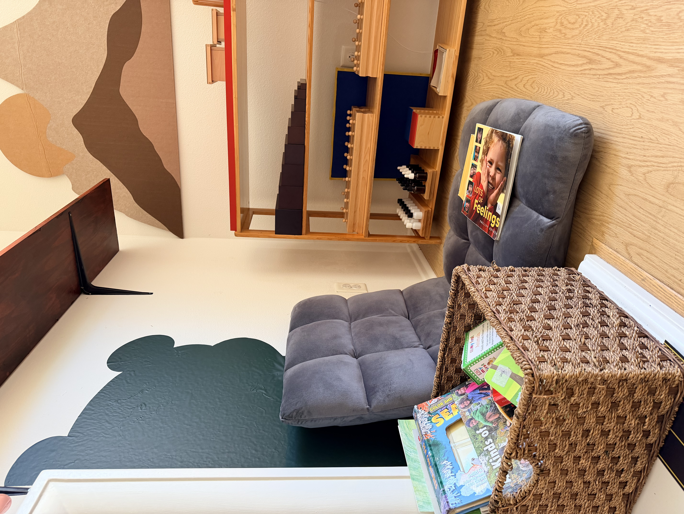
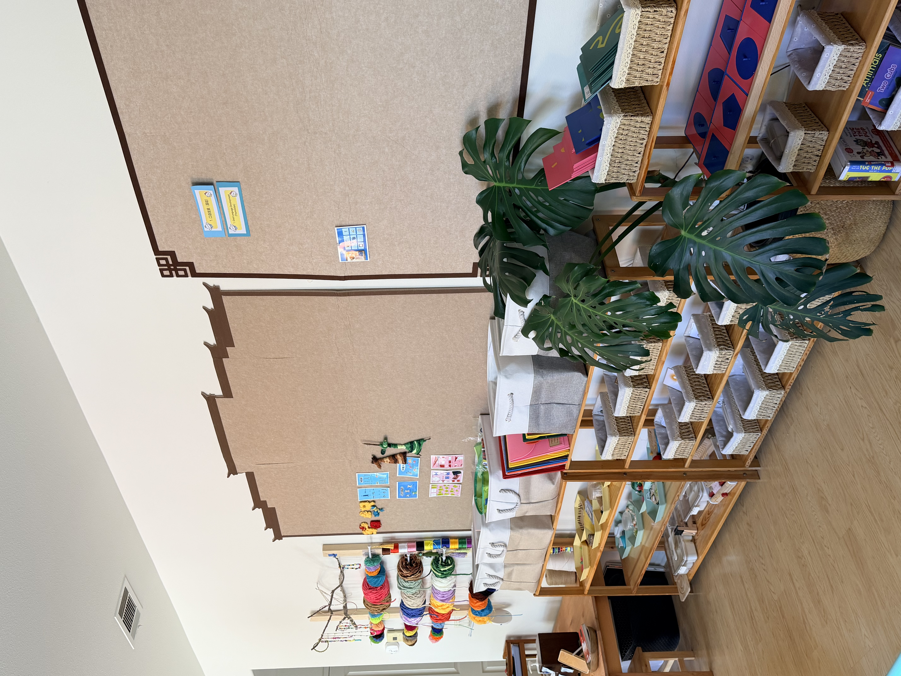
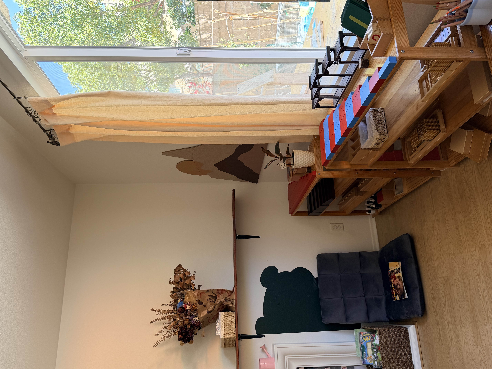
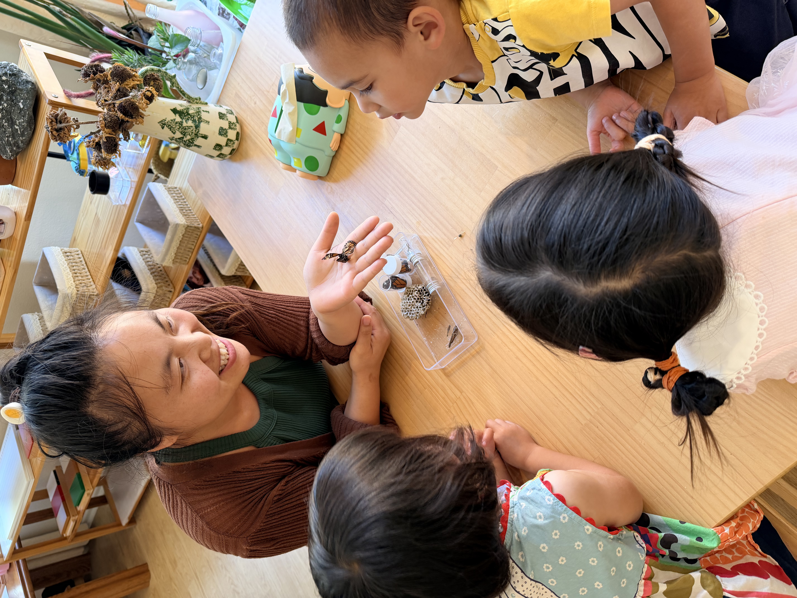
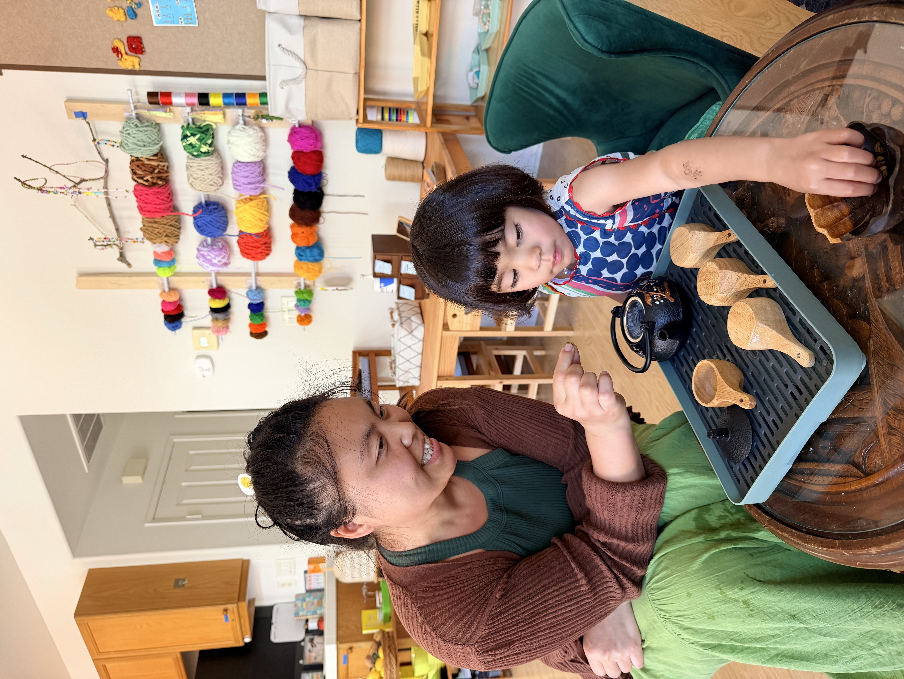
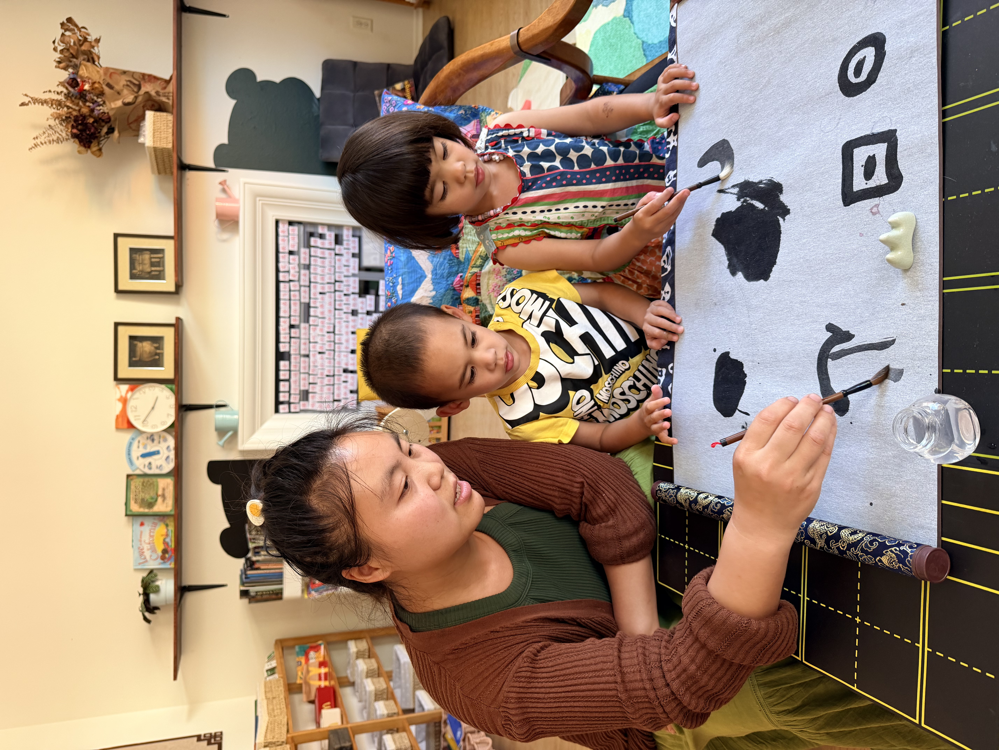
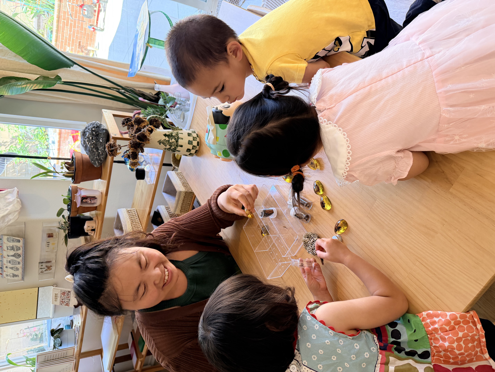
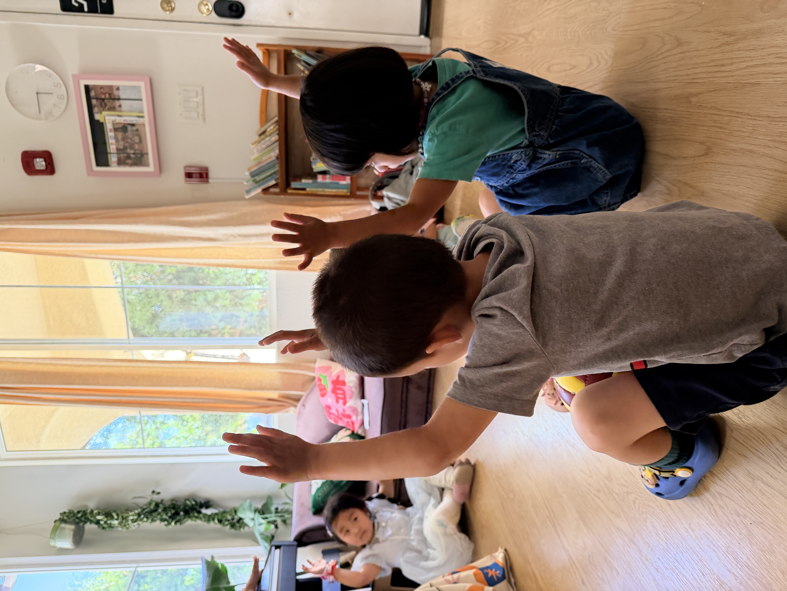

Program 3
Primary
For children 2.5-6 years, the Primary classroom builds independence, concentration, academic foundations, and social responsibility through uninterrupted Montessori work, outdoor exploration, community lunch, rest, and enrichment.
Daily rhythm
- 7:00-8:00 Early drop-off with quiet work, reading, or practical life activities.
- 8:00-8:30 Arrival, greeting, belongings, handwashing, and school-provided self-served breakfast.
- 8:00-11:00 Uninterrupted Montessori work cycle with Practical Life, Sensorial, Language, Math, and Cultural Studies.
- 11:00-12:00 Outdoor work and play with gardening, exploration, gross motor development, and collaborative projects.
- 12:00-1:00 Lunch, grace and courtesy, setup, cleanup, toileting, hygiene, and quiet transition.
- 1:00-3:30 Rest or quiet work, followed by school-provided snack and social time.
- 3:30-6:00 Afternoon enrichment with art, movement, weaving, fabric dyeing, woodworking, gardening, U-build, and outdoor time.
Classroom focus
- Children choose meaningful work in a prepared environment with individual and small-group lessons.
- Younger children nap while older children continue quiet independent work.
- Lunch emphasizes conversation, community care, grace, courtesy, setup, and cleanup.
- Pickup options include 3:00 PM full-day pickup and 6:00 PM late pickup.